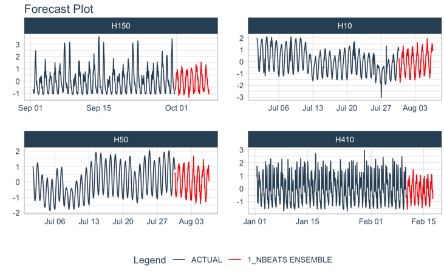

Deep Learning for Time Series, simplified.
Important: This package is having ‘minor issues’ with CRAN acceptance due to reticulate python integration. Because of this, please use the development version, which is updated with the latest features:
# Install Development Version (Recommended until CRAN update is resolved)
remotes::install_github("business-science/modeltime.gluonts")Modeltime GluonTS integrates the Python GluonTS Deep Learning Library, making it easy to develop forecasts using Deep Learning for those that are comfortable with the Modeltime Forecasting Workflow.

GluonTS in R
Using deep_ar(), which connects to GluonTS DeepAREstimator().
library(modeltime.gluonts)
library(tidymodels)
library(tidyverse)
# Fit a GluonTS DeepAR Model
model_fit_deepar <- deep_ar(
id = "id",
freq = "M",
prediction_length = 24,
lookback_length = 36,
epochs = 10,
num_batches_per_epoch = 50,
learn_rate = 0.001,
num_layers = 2,
dropout = 0.10
) %>%
set_engine("gluonts_deepar") %>%
fit(value ~ ., training(m750_splits))
# Forecast with 95% Confidence Interval
modeltime_table(
model_fit_deepar
) %>%
modeltime_calibrate(new_data = testing(m750_splits)) %>%
modeltime_forecast(
new_data = testing(m750_splits),
actual_data = m750,
conf_interval = 0.95
) %>%
plot_modeltime_forecast(.interactive = FALSE)
Installation
There are 2 key components to installing Modeltime GluonTS:
Download the R-Package,
modeltime.gluonts. This installs the R-Bindings, which allows you to interface with GluonTS.Set up the Python Environment so
modeltime.gluontscan connect to thegluontspython package.
Step 1 - Download & Install Modeltime GluonTS
Download the latest development version.
remotes::install_github("business-science/modeltime.gluonts")Step 2 - Python Environment Setup
Next, you’ll need to set up a Python Environment that contains at a minimum:
gluontsmxnetpandasnumpypathlib
The python environment then needs to be activated with reticulate.
Fast GluonTS Setup
You can use install_gluonts() to prepare and bind to a python environment containing gluonts and the required python packages.
- You only need to run this one time, and then you are good to go.
- Each time you load
modeltime.gluonts, the package will include this environment in it’s search process.
# GluonTS Installation - Run 1st time
install_gluonts()Step 3 - Restart R and Try an Example
Restart your R session (if in RStudio, close and re-open). Then try this example.
library(modeltime.gluonts)
library(tidymodels)
library(tidyverse)
# Fit a GluonTS DeepAR Model
model_fit_deepar <- deep_ar(
id = "id",
freq = "M",
prediction_length = 24,
lookback_length = 36,
epochs = 10,
num_batches_per_epoch = 50,
learn_rate = 0.001,
num_layers = 2,
dropout = 0.10
) %>%
set_engine("gluonts_deepar") %>%
fit(value ~ ., training(m750_splits))
# Forecast with 95% Confidence Interval
modeltime_table(
model_fit_deepar
) %>%
modeltime_calibrate(new_data = testing(m750_splits)) %>%
modeltime_forecast(
new_data = testing(m750_splits),
actual_data = m750,
conf_interval = 0.95
) %>%
plot_modeltime_forecast(.interactive = FALSE)Troubleshooting Installation
Python Environment setup is always fun. Here are a few recommendations if you run into an issue.
Check to make sure Conda or Miniconda is available using
reticulate::conda_version(). If no conda version is returned, then usereticulate::install_miniconda()to install Miniconda (recommended vs full Aniconda). Then (re-)runinstall_gluonts().Check if GluonTS (Python) is available using
reticulate::py_module_available("gluonts"). If this returnsTRUE, then your installation has succeeded in building the environment, but you may have other issues like missing C++ build tools (next).Windows 10 error: Microsoft Visual C++ is required. Here are the instructions for installing the C++ tools needed.
Other installation issues. Please file a GitHub issue here.
Meet the modeltime ecosystem
Learn a growing ecosystem of forecasting packages

The modeltime ecosystem is growing
Modeltime is part of a growing ecosystem of Modeltime forecasting packages.
Take the High-Performance Forecasting Course
Become the forecasting expert for your organization
High-Performance Time Series Course
Time Series is Changing
Time series is changing. Businesses now need 10,000+ time series forecasts every day. This is what I call a High-Performance Time Series Forecasting System (HPTSF) - Accurate, Robust, and Scalable Forecasting.
High-Performance Forecasting Systems will save companies by improving accuracy and scalability. Imagine what will happen to your career if you can provide your organization a “High-Performance Time Series Forecasting System” (HPTSF System).
How to Learn High-Performance Time Series Forecasting
I teach how to build a HPTFS System in my High-Performance Time Series Forecasting Course. You will learn:
-
Time Series Machine Learning (cutting-edge) with
Modeltime- 30+ Models (Prophet, ARIMA, XGBoost, Random Forest, & many more) -
Deep Learning with
GluonTS(Competition Winners) - Time Series Preprocessing, Noise Reduction, & Anomaly Detection
- Feature engineering using lagged variables & external regressors
- Hyperparameter Tuning
- Time series cross-validation
- Ensembling Multiple Machine Learning & Univariate Modeling Techniques (Competition Winner)
- Scalable Forecasting - Forecast 1000+ time series in parallel
- and more.
Become the Time Series Expert for your organization.